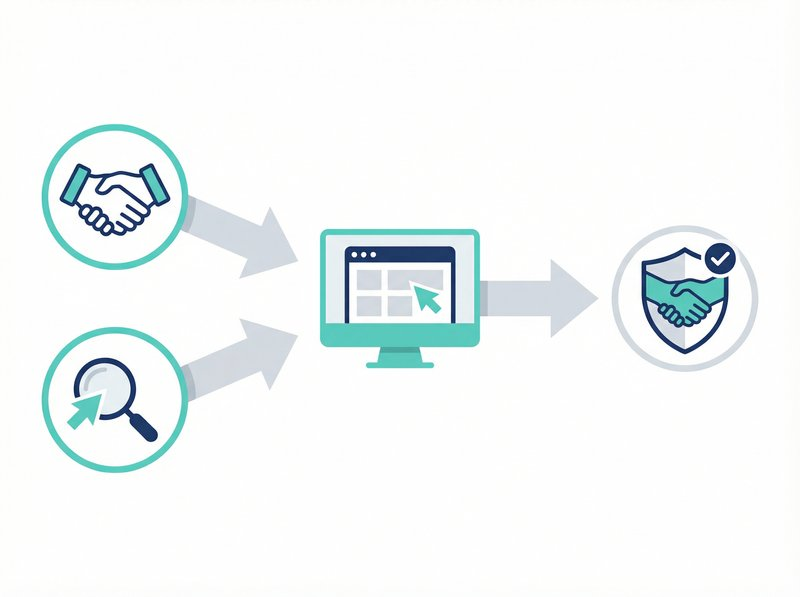

「紹介だけで仕事が来ているから、ホームページは必要ないんじゃないか」
弁護士や税理士、司法書士の先生方からご相談をいただく際、最初によく聞く言葉です。確かに、士業は紹介で成り立っている部分が大きい業界。私も埼玉県戸田市でWeb制作会社を経営していますが、その気持ちはよくわかります。
でも、「紹介だけで十分」と言えるのは、今の話ではないでしょうか。
実は、士業の先生方の間で「ホームページからの問い合わせが増えた」「若い経営者からの依頼が来るようになった」という声が増えています。特に埼玉県内では、東京の大手事務所に依頼するのではなく、「地元で信頼できる先生を探したい」というニーズが高まっているのです。
今回は、実際に士業事務所のホームページ制作をお手伝いしてきた経験から、士業ならではの集客ポイントをお伝えします。
士業のホームページは「信頼の証明書」
一般的な店舗やサービス業と違い、士業には「資格」という絶対的な信頼の土台があります。でも、資格を持っているのは皆同じ。その中で選ばれるためには「この先生にお願いしたい」と思ってもらう必要があります。
ホームページは、まさにその「選ばれる理由」を伝える場なのです。
名刺代わりのホームページでは不十分
正直に言いますと、士業のホームページで多いのが「名刺をそのままWebにした」ようなサイトです。事務所名、住所、電話番号、取扱業務の一覧。これだけでは、他の事務所との違いがわかりません。
私がお手伝いした川口市の税理士事務所では、開業当初こそ紹介で順調でしたが、3年目あたりから新規のお客様が減ってきたという課題がありました。
「知り合いの経営者に聞いたら、最近は税理士を探すときもまずネットで調べるって言うんです。うちのホームページを見せたら、"これじゃ何をしてくれるかわからない"と言われて、ショックでした」
この先生には、「創業支援に強い」「クラウド会計対応」「経営者の相談相手になる」という強みを前面に出したホームページにリニューアルしていただきました。結果、リニューアル後6ヶ月で問い合わせが3倍になったとご報告いただいています。
士業ホームページに必要な5つの要素
では、具体的にどんな内容を載せればいいのか。士業特有のポイントを5つお伝えします。
1. 代表者の顔と人となり
士業の仕事は「人対人」の信頼関係が基本です。だからこそ、代表者の写真とプロフィールは非常に重要。
- なぜこの仕事を選んだのか（動機・想い）
- どんな経験を積んできたか（経歴・実績）
- どんな方の力になりたいのか（対象となるお客様）
よく「顔写真を載せるのは抵抗がある」という声をいただきますが、顔が見えない事務所に依頼したいと思う人は少ないのが現実です。特に、初めて士業に依頼する方は不安でいっぱい。その不安を解消するのが「顔が見える」ことなのです。
2. 専門分野・得意分野の明確化
「何でもやります」では、誰にも刺さりません。
たとえば税理士なら：
- 創業・開業支援に強い
- 相続税申告の実績が豊富
- 飲食店・美容室など特定業種に詳しい
- クラウド会計（freee、マネーフォワード）対応
司法書士なら：
- 不動産登記がメイン
- 会社設立のサポート
- 相続・遺言の相談が多い
このように、「この分野ならこの先生」とイメージしてもらえるようにすることが大切です。
3. 料金の目安
実際、料金の目安を載せていない士業サイトは、問い合わせ率が低い傾向にあります。「まずは相談してください」と書いてあっても、料金がわからない相手に連絡するのは勇気がいるものです。
4. 相談事例・解決事例
守秘義務の関係で具体的なケースを載せにくいのが士業の難しいところ。でも、匿名化・一般化した事例であれば十分可能です。
たとえば：
- 「飲食店を開業したいが、どこから手をつけていいかわからない」→ 創業計画から融資申請までサポート
- 「親が亡くなり、不動産の名義変更が必要になった」→ 相続登記の手続きを代行
- 「会社の顧問税理士を変えたいが、引き継ぎが心配」→ スムーズな引き継ぎで安心の移行
こうした事例があると、「自分と同じような悩みを解決してくれそう」と感じてもらえます。
5. お客様の声
これも守秘義務の問題がありますが、許可をいただいたお客様の声は非常に効果的です。顔写真や実名が難しければ、イニシャルや業種だけでも構いません。
「戸田市・製造業 A社様」「さいたま市・50代男性」といった形でも、実在のお客様がいることが伝わるだけで信頼度は大きく変わります。
埼玉の士業が地域で選ばれるために
埼玉県、特に戸田市や川口市、蕨市といった東京に近いエリアでは、「東京の先生に頼むか、地元の先生に頼むか」という選択肢があります。
東京の大手事務所は実績も豊富で安心感がありますが、地元の士業には「近い」「相談しやすい」「地域の事情がわかる」という強みがあります。その強みをホームページでしっかり伝えることが大切です。
MEO対策（Googleマップ対策）も重要
士業の場合、「地域名＋業種」で検索されるケースが多いです。
- 「戸田市 税理士」
- 「川口 弁護士 相続」
- 「さいたま市 司法書士 会社設立」
こうした検索に対応するには、Googleビジネスプロフィール（旧Googleマイビジネス）の最適化も欠かせません。ホームページとGoogleビジネスプロフィールを連携させることで、検索結果での露出を最大化できます。
ホームページ制作の費用目安
士業のホームページは、一般的な店舗サイトより信頼性・専門性を重視したデザインが求められます。そのため、費用もやや高めになる傾向があります。
目安としては：
- シンプルな5ページ程度のサイト：15万円〜30万円
- ブログ機能付きのサイト：25万円〜50万円
- 予約システムや問い合わせフォーム充実：40万円〜80万円
ミアキスでは、士業の先生方向けに信頼感のあるデザインと、集客につながる構成をご提案しています。詳しくは料金プランをご覧ください。
まとめ：紹介頼みからの脱却
士業は紹介で成り立つ仕事です。でも、紹介だけに頼っていると、紹介元がいなくなったときに困ります。また、紹介される側も、紹介される前にホームページを見て「この先生で大丈夫か」を確認する時代です。
つまり、ホームページは紹介の「裏付け」にもなるのです。
- 今は紹介で十分でも、将来に備えてホームページを整備しておく
- 紹介された方がホームページを見たとき「やっぱりこの先生にお願いしよう」と思ってもらえるようにする
- 新規のお客様を増やしたいなら、専門性と人柄が伝わるサイトを作る
埼玉県戸田市のミアキスでは、士業の先生方のホームページ制作を多数お手伝いしています。「うちの事務所にホームページは必要？」というご相談だけでも大歓迎です。
まずはお気軽に無料相談からお問い合わせください。